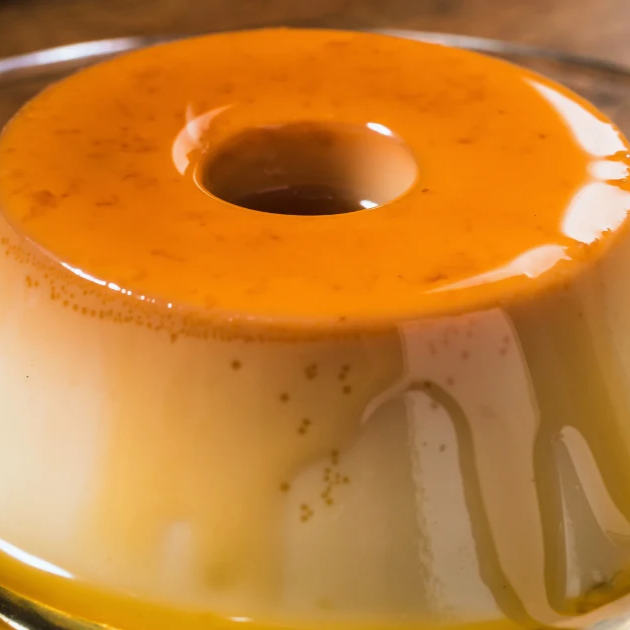

Ingredientes
Massa
- 1 lata de leite condensado
- 3 ovos inteiros
- 1 lata de leite (medida da lata de leite condensado)
Calda
- 1 xícara (chá) de açúcar
- 1/2 xícara de água
Modo de Preparo
Massa
- Bata bem os ovos no liquidificador.
- Acrescente o leite condensado e o leite, e bata novamente.
- Em uma forma redonda, já com a calda, despeje a massa do pudim.
- Asse em forno médio por 45 minutos, com a assadeira redonda dentro de uma maior com água.
- Espete um garfo para ver se está bem assado.
- Deixe esfriar e desenforme.
Calda
- Derreta o açúcar na panela até ficar moreno, acrescente água e deixe engrossar.